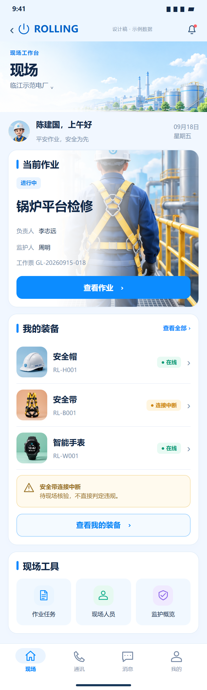
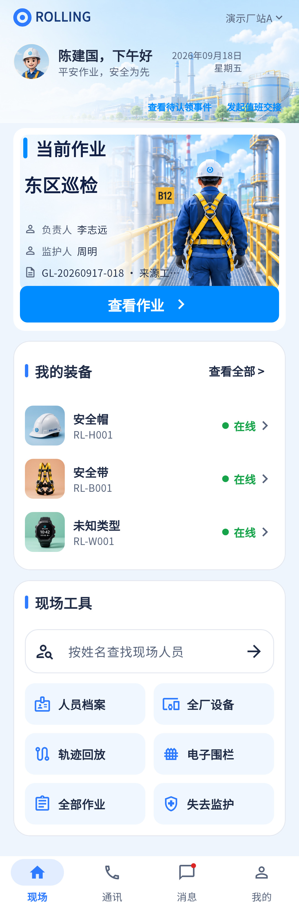

主要场景已覆盖，当前工具入口多于设计，应保留设备、轨迹、围栏等既有能力。
相同 · 已有基础
作业、装备、现场工具、问候、日期与四栏导航均有；作业和设备沿用同源图片。
不同 · UI与场景
当前问候合并在头图，工具为两列六入口并含搜索；设计为头图下问候、三入口。当前少作业状态标签和独立装备异常提示卡。
01 / 先看 UI
两图显示宽度统一；设计390px与当前360逻辑宽的画布不同。各图可独立滚动到底，点击“原图”放大。


使用既有组件截图；业务数据为示例。
02 / 逐项核对功能与小交互
入口：底部导航 → 现场 · 当前形态：主页面
| 编号 | 部位 | 设计要求 | 当前UI | 功能结论 | 下一步 |
|---|---|---|---|---|---|
| 04-01 | 顶部 | Logo、现场标题、厂站切换 | 当前直接问候和日期，标题结构不同，无设计铃铛 | 部分：切站/问候/日期已有 | 在既有头部比例内统一层级；铃铛需绑定真实事件入口 |
| 04-02 | 作业 | 名称、状态、负责人、监护人、工作票 | 名称和人员票号已有；状态未按图突出 | 已有代码：/duty/summary；查看作业跳详情 | 补状态徽标，避免固定“进行中” |
| 04-03 | 装备 | 三类装备图、SN、连接态、详情箭头 | 有图片与SN；手表在通用类型映射中可显示“未知类型” | 部分：/me/equipment，点击设备详情 | 统一类型字典；保留未知值，不据样例全标在线 |
| 04-04 | 装备异常 | 安全带连接中断的黄色提示 | 当前列表状态有，缺独立说明卡 | 部分：状态展示存在，提示层级缺失 | 按真实状态展示提示，连接中断不能判定违规 |
| 04-05 | 装备入口 | 查看全部及查看我的装备 | 当前只有“查看全部” | 已有代码：进入MyEquipmentPage | 可补第二入口或统一一个明确入口，避免误判缺整个装备页 |
| 04-06 | 工具 | 作业任务、现场人员、监护概览 | 当前全部作业、人员档案、失去监护，名称不同 | 已有代码：分别跳tasks/people/supervision | 名称对齐且保持导航目标 |
| 04-07 | 现有额外工具 | 图未列设备、轨迹、围栏 | 当前三者都有入口 | 已有代码：/devices、/tracks、/fences | 必须保留；不能照三宫格删减场景 |
| 04-08 | 人员搜索 | 图中未列 | 当前姓名搜索框与跳转 | 已有代码：people?name=带入列表 | 作为现有增强保留 |
| 04-09 | 值班动作 | 图中未列 | 当前顶部可见待认领、发起值班交接 | 已有代码：按角色显示，operators及handovers接口 | 保留权限和交接入口，纳入附加场景清单 |
| 04-10 | 刷新空态 | 无当前任务/无装备/网络失败 | 设计只给有数据 | 已有代码：刷新、错误、装备不可用说明 | 补对应UI状态，禁止拿示例任务替代真实空结果 |
| 04-11 | 底部 | 四栏与消息提示 | 当前60高，图71+手势区 | 已有代码：四栏切换和收件计数红点 | 按安全区比较比例，保留底栏与红点 |
源码依据
queries/workbench.dart:49,166,233,393,459,641,675；app.dart:449
链接为随报告保存的带行号快照；行号对应分析时源码。以函数和字段共同定位，不能将请求代码视为执行成功证据。